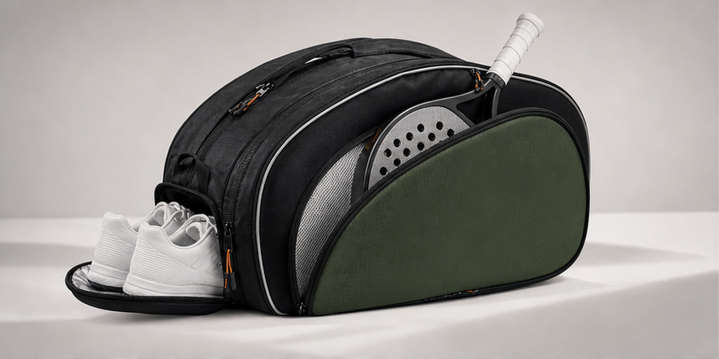
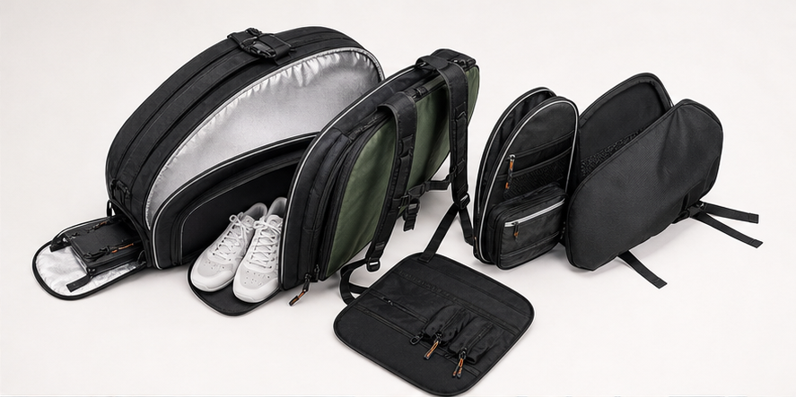
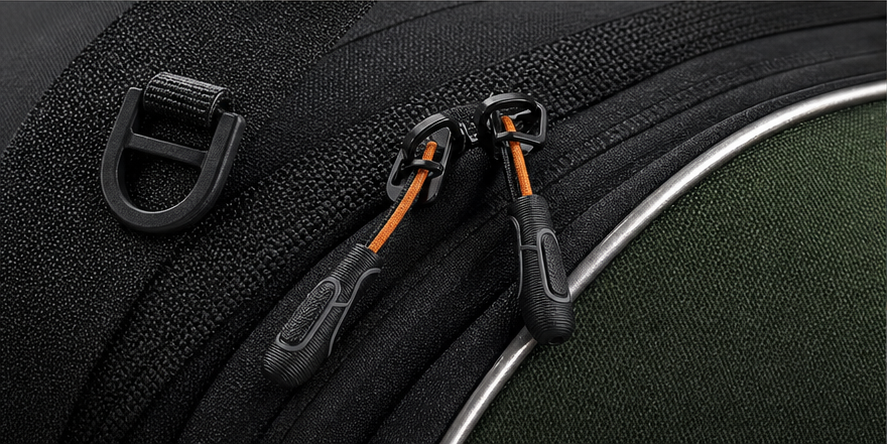
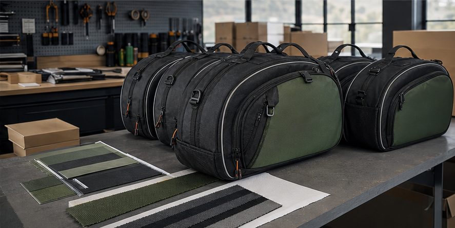

What serious padel buyers need from a factory partner
A strong padel bag is not simply a larger tennis bag with a new name. Padel players carry shorter racquets, shoes, grip tape, apparel, bottles, towels and sometimes laptop or work items when they move between office, club and travel. For brand buyers, the challenge is to build a bag that looks premium on the court, protects racquets in hot weather, and still lands at a workable target price. Cappuccino Bags develops custom padel bags for distributors, club programs and private-label sports brands that need a practical factory partner in China rather than a catalog reseller.
The most valuable part of the development process is deciding the bag architecture before artwork or color selection. A padel bag can be a tournament racquet bag, a backpack, a hybrid duffel, or a compact sling. Each format changes the cutting plan, the lining usage, the foam thickness, the carry balance and the carton size. We help buyers compare those choices early so the first sample already reflects the intended retail channel, not only a nice-looking shape.
Product formats that work for padel programs
For club and tournament sales, racquet bags usually perform best when they have one or two dedicated racquet compartments, a central apparel section, a ventilated shoe tunnel and a small valuables pocket. For online retail, a backpack format can reduce freight volume and appeal to players who commute by bike, scooter or public transport. Premium padel brands often ask for a thermal lining in at least one racquet compartment, molded zipper pullers, reinforced bottom panels and a cleaner front panel that leaves room for embroidery, woven patches or heat-transfer branding.
A common mistake is adding too many pockets because the competitor photos show them. Every pocket adds labor, seam bulk and possible quality risk. A better approach is to define the actual usage path: where the player places two racquets, where wet clothes go, how shoes are separated, how the bag stands in a locker room, and whether the straps stay comfortable when the main compartment is full. Those decisions create a more useful product than decorative complexity.
Structure details worth specifying
For padel racquet protection, the compartment should hold the racquet head securely without forcing the handle to bend at the zipper line. Thermal lining can help reduce heat exposure, but it must be stitched cleanly and paired with foam that does not collapse after shipping compression. Shoe compartments need a balance between ventilation and cleanliness; mesh openings work well for airflow, while a lining wall prevents sole dirt from touching apparel.
Backpack straps on a padel bag need a different angle than straps on a hiking pack. If the bag body is long and the straps sit too far apart, the bag twists while walking. We test strap anchor positions, padding density and handle reinforcement during sampling. For heavier tournament bags, bartack stitching at strap anchors, end handles and shoulder-strap D-rings is more important than a decorative panel. These are the details buyers rarely see in a rendering but customers feel during daily use.
Materials, trims and decoration choices
Most padel bags use 600D or 900D polyester, coated polyester, nylon twill, PU-coated fabric, jacquard webbing, air mesh, PE board, EVA foam, thermal silver lining and molded or metal zipper pullers. A budget retail line may use standard polyester and screen printing. A premium line may combine matte coated fabric, custom webbing, rubber patches, contrast piping and branded pullers. For sustainable-positioned programs, recycled polyester can be considered, but it should be tested for color consistency and coating stability before bulk production.
Logo placement should be planned around seam lines and pocket openings. Large heat-transfer logos can crack if placed across a flexible curved panel. Embroidery looks premium but can distort thinner fabric unless backing and thread density are selected correctly. Woven patches and rubber badges are usually reliable for padel bags because they give a retail feel without asking the fabric to carry too much decoration stress.
Sample development and QC checkpoints
A good padel bag sample review should include more than dimensions and color. Buyers should check racquet fit, zipper path, shoe tunnel volume, strap comfort, standing balance, internal seam finish, lining tension, puller strength and logo position. We recommend photo documentation at the sample stage and before shipment, especially for first orders or new material combinations. QC photos before shipment can include front, back, inside, compartment, logo, carton mark, packing method and random detail checks.
Bulk consistency is protected by clear sample comments. If the first sample has a stiff zipper curve, a strap that feels too narrow or a shoe pocket that steals too much main capacity, those issues should be corrected before pre-production approval. That discipline prevents the classic problem of receiving a beautiful sample and a bulk order that feels slightly different.
Case direction for brand buyers
One practical padel project might start with a distributor that wants a mid-price club bag in two colors. The development goal is not maximum features; it is fast sampling, clean logo application, strong shoulder comfort and carton efficiency. Another project might be a premium direct-to-consumer line where the bag needs a distinctive silhouette, matte fabric, branded zipper pullers, thermal lining and custom packaging. Both are padel bags, but the factory brief is completely different.
Cappuccino Bags is useful when the buyer wants those differences translated into a production-ready specification. We can help turn mood boards, competitor references or rough sketches into sample instructions, then support revisions until the bag is ready for quotation and production.
Buyer specification checklist for padel bag projects
Before requesting a quotation, a padel buyer should define the exact playing format and sales channel. The factory needs to know whether the bag is for club pro shops, online retail, wholesale distributors, team orders or tournament giveaways. That answer affects nearly every decision: how much structure the body needs, whether the thermal pocket is mandatory, whether the product should stand upright in photos, how visible the logo should be, and how much packaging budget is available.
A practical padel specification should include target racquet count, approximate finished dimensions, preferred fabric handfeel, colorway, shoe compartment position, strap style, lining color, thermal lining requirement, logo method, zipper puller level, packaging method and expected inspection standard. If the buyer has competitor samples, it is useful to identify what should be kept, what should be improved and what should be avoided. That turns competitor research into a manufacturing instruction instead of a vague style reference.
Cost drivers and how to control them
The biggest padel bag cost drivers are body size, number of compartments, lining complexity, foam and board usage, zipper length, custom hardware, logo method and labor time. A larger bag does not only consume more fabric; it also needs more lining, more binding, longer zippers, more reinforcement and larger cartons. Thermal lining can add perceived value, but using it in every compartment may not be necessary for a mid-price line.
Cost control does not mean removing all features. It means choosing the features customers will notice. A strong shoe compartment, comfortable straps, clean zipper movement and a premium front logo often matter more than hidden decorative pockets. During development, Cappuccino Bags can suggest where to simplify construction without weakening the retail story, helping buyers protect margin while keeping the bag credible.
Questions to answer before production approval
Before approving bulk production, buyers should answer several concrete questions. Does the bag fit the intended racquet count without forcing the zipper? Does the shoe pocket hold real shoes in the target market size range? Does the bag keep its shape after being packed into a carton? Is the logo straight when the bag is filled, not only when it is empty? Are the straps comfortable when the bag carries racquets, shoes and apparel? These checks often reveal issues that cannot be seen in a flat specification sheet.
It is also wise to confirm carton size and loading method before final approval. Padel bags can be bulky, and freight cost can change the commercial result of the order. A small adjustment to folding, stuffing or carton quantity may improve shipping efficiency without changing the product experience. That is why we treat packing as part of product development, not an afterthought.
Image proof and case evidence to add before final publishing
For the final live page, the strongest evidence would be approved real photos from sample development: a front product photo, an open-compartment photo with racquets and shoes inside, a close-up of thermal lining and zipper construction, and a shipment or QC table photo. These images help buyers trust that the page is based on manufacturing ability, not only marketing copy. If client confidentiality prevents showing logos, photos can be cropped, anonymized or shot with neutral samples.
RFQ mistakes to avoid
The most common RFQ mistake is asking only for the cheapest padel bag price without defining compartment layout, target material and packing method. That produces quotations that cannot be compared fairly. A better RFQ explains the intended retail tier, racquet count, shoe storage, logo method, colorways, sample deadline and expected order quantity.
Send us your target product brief
Share reference photos, expected order quantity, target price level, material preference, logo method and packaging needs. Cappuccino Bags can review the concept and suggest a practical sample route.
Request OEM/ODM Support